Amemet
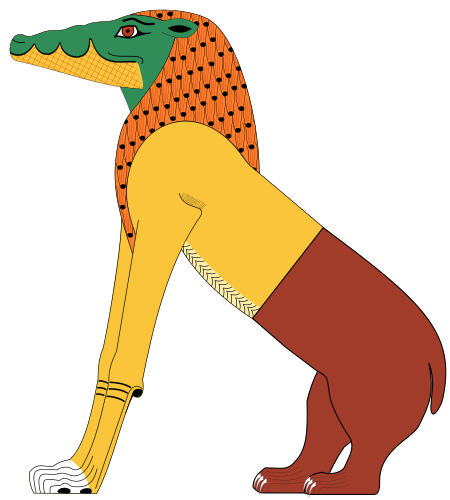
La déesse Amémet est représentée avec la partie postérieure d’un hippopotame, la partie antérieure d’un lion et la tête d’un crocodile. Lors de la pesée des cœurs dans l’au-delà, elle « dévorait » ceux des personnes jugées coupables.
Amémet n’a jamais eu de véritable culte ni de temple qui lui soit consacré : davantage crainte que vénérée, elle n’existe que dans le contexte du jugement de l’âme, décrit notamment dans le Livre des Morts. Son autre nom, la « Grande de Mort », rappelle qu’elle ne représente pas la mort du corps mais l’anéantissement définitif de l’être pour celui dont le cœur, plus lourd que la plume de Maât, révèle une vie injuste.
Amon
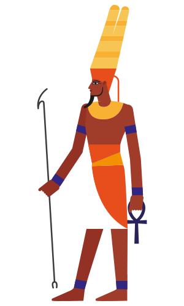
Chef des dieux sous le Nouvel Empire, Amon revêtait l’aspect d’un homme portant une coiffe ornée de deux longues plumes, ou encore celui d’un bélier ou d’une oie. Son épouse, Mout, leur fils Khonsou et lui constituent la triade thébaine, la famille sacrée de Thèbes. Amon en vint à acquérir une importance considérable, mais ne devint jamais un dieu d’État. Il était associé au dieu Rê et vénéré sous la forme du dieu Amon-Rê.
Amon-Rê
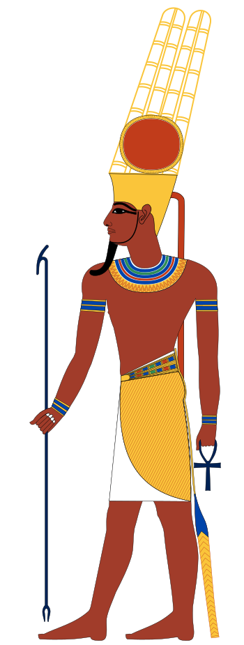
Amon-Rê est une des formes du dieu solaire et est parfois figuré comme un sphinx ou un être humain à tête de faucon. Le disque solaire est son symbole. Le mot « Amon » signifie « le caché » ou « le caractère caché de la divinité », tandis que « Rê » ou « Râ » signifie « le soleil » ou la divinité que manifeste la puissance du soleil. Le dieu Amon-Rê incarne ces deux idées : le pouvoir invisible toujours présent et la lumière éclatante de la force divine qui assure la vie. Pour retracer les origines d’Amon-Rê, il faut remonter à l’Ancien Empire, à Héliopolis, où le dieu Rê est apparu pour la première fois en tant que manifestation principale du dieu solaire. Rê est représenté avec la tête d’un faucon surmontée du disque solaire lorsqu’il traverse le ciel, et avec une tête de bélier lorsqu’il accomplit son périple nocturne dans le monde inférieur. Ce dieu local s’est élevé au rang de dieu national, ce qui entraîna l’érection de temples solaires dans tout le pays. Sous la IVe dynastie, les pharaons commencèrent à se considérer comme des incarnations de ce dieu. Plus tard, sous le Moyen Empire, lorsqu’Amon devint le dieu principal, Rê lui fut fusionné pour devenir Amon-Rê.
Anubis
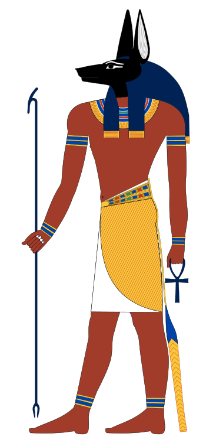
Anubis était une divinité à tête de chacal qui présidait à l’embaumement et accompagnait les rois défunts dans l’au-delà. Lorsque les rois paraissaient devant Osiris pour être jugés, Anubis plaçait leur cœur sur un des plateaux d’une balance, et une plume (représentant Maât) sur l’autre. Le dieu Thot enregistrait le résultat, dont dépendait le droit du roi d’accéder à l’au-delà. Anubis est le fils d’Osiris et de Nephthys.
Apophis

Apophis (ou Apopis, « celui qui fut craché ») est le serpent géant du chaos primordial, né du Noun avant même l’apparition du monde ordonné. Contrairement aux autres dieux, il n’a jamais été créé et ne peut donc jamais être détruit : chaque nuit, il attend la barque solaire de Rê à un point critique de son périple à travers la Douat pour tenter d’engloutir le soleil et replonger l’univers dans le chaos originel.
Apophis ne possédait aucun temple ni culte à proprement parler : il incarnait au contraire tout ce que la religion égyptienne cherchait à repousser. Un rituel quotidien, le « Livre de la Terrassation d’Apopis », était récité par les prêtres dans les temples de tout le pays : on y façonnait une effigie de cire du serpent que l’on crachait, piétinait, tailladait puis brûlait, afin d’aider magiquement Rê à vaincre son ennemi chaque nuit. Sa défaite n’est cependant jamais définitive : Apophis renaît sans cesse, rappelant que la lutte entre l’ordre (Maât) et le chaos ne connaît pas de fin.
Aton
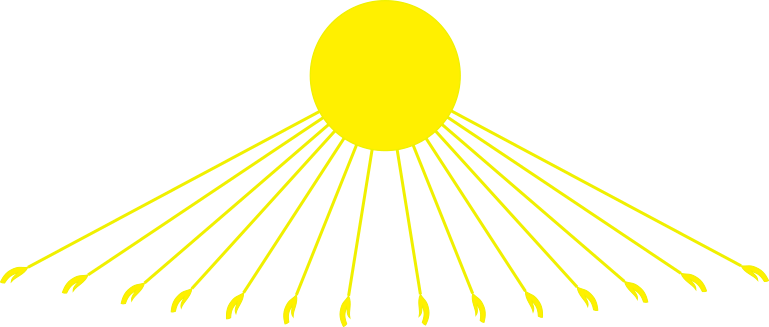
Dieu cosmique primordial, Aton est le dieu solaire en tant que créateur, la substance d’où est tirée toute la création. Il est le seigneur de l’univers. Sous sa forme humaine, il représente le roi d’Égypte, qui porte la double couronne d’Égypte.
Si Aton fut vénéré dès l’Ancien Empire comme simple manifestation du disque solaire, c’est le pharaon Akhenaton qui, au XIVe siècle avant J.-C., en fit le dieu unique de son royaume, fermant les temples des autres divinités et fondant une nouvelle capitale, Akhetaton (aujourd’hui Amarna), entièrement dédiée à son culte. Cet épisode, connu sous le nom d’hérésie amarnienne, demeure la plus importante tentative de monothéisme de l’Égypte antique ; le culte d’Aton fut aboli peu après la mort d’Akhenaton et l’ordre polythéiste traditionnel rétabli.
Bastet
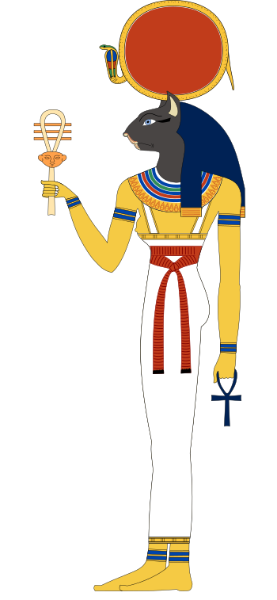
Déesse-chatte, elle symbolise les aspects les plus protecteurs de la maternité, en opposition à l’agressive Sekhmet à tête de lion. Représentée avec un corps de femme et une tête de chatte, elle porte souvent un sistre.
Son principal centre de culte était Bubastis, dans le delta du Nil, où un immense temple lui était consacré et où, chaque année, une fête réunissait des milliers de pèlerins dans une liesse populaire décrite par Hérodote. Fille de Rê, elle veillait sur les foyers et la fertilité ; les chats, considérés comme sacrés, étaient élevés près de ses sanctuaires puis momifiés et offerts en ex-voto par milliers.
Bès
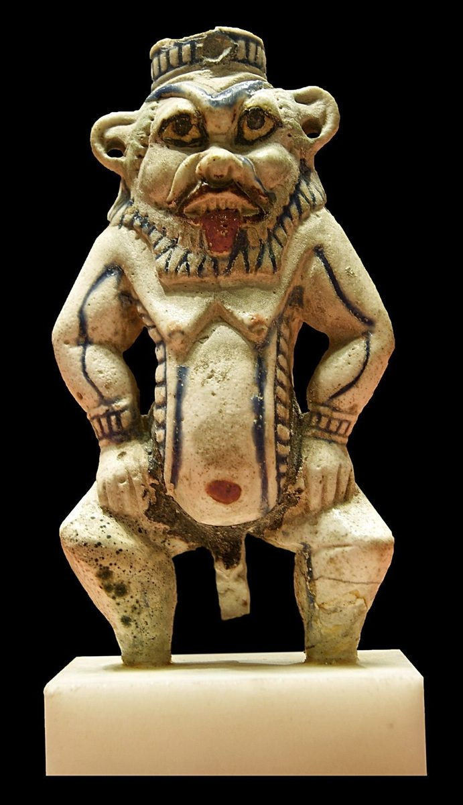
Ce dieu nain, dont le visage lippu a l’allure d’un masque grotesque, porte souvent des instruments musicaux, des couteaux ou le hiéroglyphe représentant la protection. Malgré son apparence, il est le protecteur de la famille et est associé à la sexualité et à l’accouchement.
Contrairement à la plupart des dieux égyptiens, Bès n’eut jamais de grand temple : son culte était avant tout domestique, populaire et protecteur. Son image ornait les lits, les têtières et les objets du quotidien, notamment dans les chambres d’accouchement, où l’on croyait qu’il éloignait par ses grimaces et son tambourin les esprits malveillants menaçant la mère et le nouveau-né.
Chou & Tefnout

Chou est un dieu mâle jumelé à sa sœur, Tefnout. Ensemble, ils personnifient deux principes fondamentaux de l’existence humaine. Chou symbolise l’air sec et la force de conservation. Tefnout incarne l’air humide et corrosif qui engendre le changement, créant le concept de temps. Chou et Tefnout sont les enfants de Rê (ou d’Atoum, une forme du dieu solaire), un dieu cosmique primordial, qui a engendré les éléments de l’univers.
Geb & Nout

Ces deux dieux sont la contre partie l’un de l’autre. Geb, un dieu terrestre, qui représente la terre émergée, est l’époux de Nout, une déesse céleste qui symbolise le ciel, image inversée de la mer. Nout est représentée comme une femme avec le hiéroglyphe de son nom sur la tête ou comme une femme au corps arqué recouvert d’étoiles. Ils sont les enfants de Chou et de Tefnout.
Hâpî
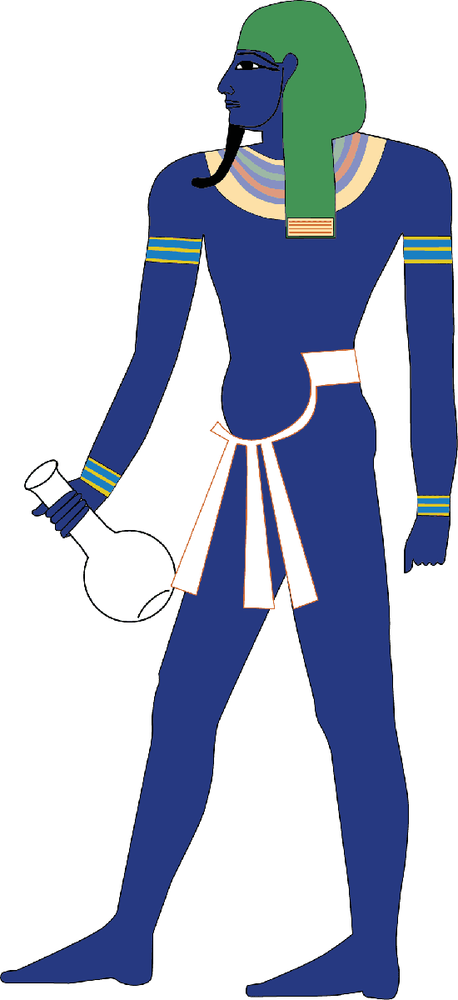
Hâpî, celui qui apporte l’abondance, assurait la crue annuelle du Nil qui fertilisait la terre, permettant de la cultiver. Cette divinité était représentée comme un homme aux cheveux ornés de plantes tenant une table d’offrande garnie des produits de la terre.
Bien qu’il n’ait jamais eu de temple à son seul nom, Hâpî recevait des hymnes et des offrandes rituelles aux abords de la première cataracte, près d’Assouan, là où l’on croyait que la crue prenait sa source. Son apparence androgyne, aux formes généreuses et à la poitrine féminine, symbolisait l’abondance nourricière du fleuve ; on le représentait parfois en double, l’une portant les plantes du Sud, l’autre celles du Nord, incarnant l’union des deux Égyptes par les eaux du Nil.
Hathor
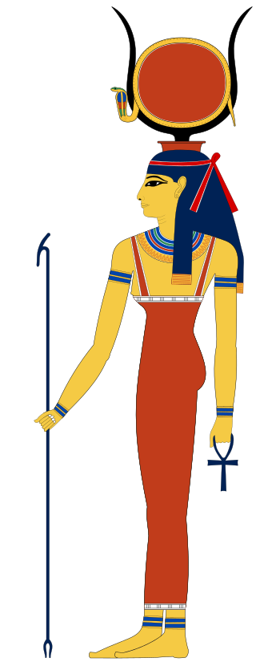
Cette déesse peut prendre trois aspects : celui d’une femme tenant un collier-menat et le disque solaire et portant une couronne formée des cornes d’une vache, celui d’une femme aux oreilles de vache, ou encore celui d’une vache. Elle est la fille de Rê et l’épouse d’Horus, le dieu-faucon céleste. Elle est également considérée comme la mère de chaque roi régnant (tout comme la déesse Isis). La personnalité d’Hathor est double : sous son aspect vengeur, elle prit l’apparence léonine de la déesse Sekhmet et tenta de détruire l’humanité après la révolte décrite dans le mythe de la création; sous sa forme bovine, elle est associée à la sexualité, la joie et la musique.
Horus

Horus, le dieu à tête de faucon, est bien en évidence en Égypte. Horus est le fils d’Osiris et d’Isis, l’enfant divin de la triade sacrée — à ne pas confondre avec son oncle Horus l’Ancien, l’un des cinq enfants de Nout né avant lui. Il est l’un des nombreux dieux associés au faucon. Son nom signifie « celui qui est au-dessus » et aussi « celui qui est loin ». Le faucon fut vénéré depuis les temps les plus anciens en tant que divinité cosmique. Son corps représentait le ciel, et ses yeux le soleil et la lune. Horus est représenté comme un faucon portant une couronne avec un cobra ou la double couronne d’Égypte. Le serpent naja (uræus) que les dieux et les pharaons portaient sur le front symbolise la lumière et la royauté. Il a pour fonction de protéger la personne du danger. Lorsque Horus était enfant, son père fut tué par son oncle Seth. Pour protéger son fils de tout danger, Isis le cacha dans les marais du Nil, où elle le préserva des serpents venimeux, des scorpions, des crocodiles et des animaux sauvages. En grandissant, il apprit à se protéger lui-même et devint suffisamment fort pour combattre Seth et réclamer son juste héritage, le trône d’Égypte. En conséquence, Horus est associé au titre de roi. Il personnifie le pouvoir divin et royal. Les rois croyaient qu’ils descendaient d’Horus, qui était considéré comme le premier roi divin d’Égypte.
Isis

Isis incarne le pouvoir qu’a l’amour de vaincre la mort. Elle ramena son frère - époux, Osiris, à la vie et sauva son fils Horus d’une mort certaine. Elle est représentée la tête surmontée du hiéroglyphe signifiant « trône »; à partir du Nouvel Empire, elle porta parfois un disque solaire flanqué de cornes de vache. Elle est également souvent représentée en train de pleurer la mort de son mari et d’allaiter son fils.
Le grand centre de son culte se trouvait à Philae, à l’extrême sud de l’Égypte, où son temple resta actif jusqu’au VIe siècle après J.-C., l’un des derniers sanctuaires païens en activité de l’Antiquité. Considérée comme la magicienne la plus puissante du panthéon — c’est elle qui arracha à Rê son nom secret —, elle porte l’épithète de « grande de magie ». Son culte connut un rayonnement exceptionnel bien au-delà de l’Égypte : les mystères d’Isis se répandirent dans tout le monde gréco-romain, jusqu’à Rome même, où elle devint l’une des divinités étrangères les plus vénérées de l’Empire.
Khnoum
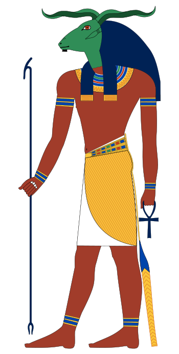
Dieu à tête de bélier aux cornes horizontales, il est souvent figuré en train de façonner des humains sur son tour. Khnoum a émergé de deux cavernes du monde souterrain dans l’océan de Noun. C’était le dieu de la première cataracte du Nil, en Haute-Égypte, et il assurait la fertilité en dirigeant la moitié des eaux du fleuve vers le sud et l’autre moitié vers le nord.
Son sanctuaire principal se trouvait à Éléphantine, à la frontière méridionale de l’Égypte, où il formait une triade avec les déesses Satis et Anouket. Considéré comme le « divin potier », c’est lui qui façonnait sur son tour non seulement le corps de chaque être humain mais aussi son double spirituel, le ka, avant de les déposer dans le ventre maternel — faisant de lui l’un des rares dieux créateurs dont le mythe survécut, sous une forme locale, jusqu’à l’époque gréco-romaine dans le temple d’Esna.
Khonsou
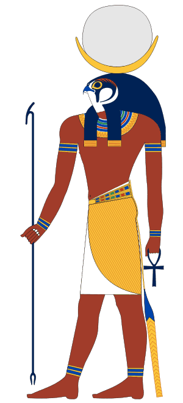
Fils du couple thébain Amon et Mout, c’est un dieu lunaire souvent représenté avec une tête de faucon surmontée d’un croissant de lune et d’un disque lunaire. Il revêt aussi souvent l’aspect d’un jeune homme avec une mèche de cheveux retombant sur le côté du visage, la tête surmontée d’un croissant de lune et d’un disque lunaire.
Son temple, encore visible aujourd’hui, se dresse au cœur du grand complexe de Karnak, à Thèbes, où il formait avec ses parents Amon et Mout la triade thébaine. Dieu du temps et du calcul des mois, il était aussi invoqué comme guérisseur : une légende raconte qu’une statue de Khonsou fut envoyée jusqu’en Syrie pour délivrer une princesse étrangère d’un esprit malfaisant.
Maât
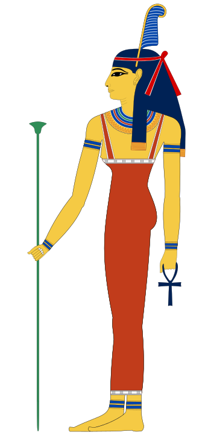
Maât est la déesse de la vérité et de la justice. L’iconographie la représente sous les traits d’une femme à la tête ceinte d’un bandeau orné d’une plume d’autruche.
Fille de Rê, Maât incarne bien plus qu’une déesse : elle est le principe même de l’ordre cosmique, de la vérité et de la justice sur lequel repose l’équilibre du monde. Chaque pharaon devait « vivre selon Maât » pour garantir l’harmonie de son royaume, et c’est sa plume qui, lors du jugement de l’âme, était placée face au cœur du défunt sur les plateaux de la balance : seul un cœur aussi léger qu’elle permettait d’accéder à l’au-delà.
Min
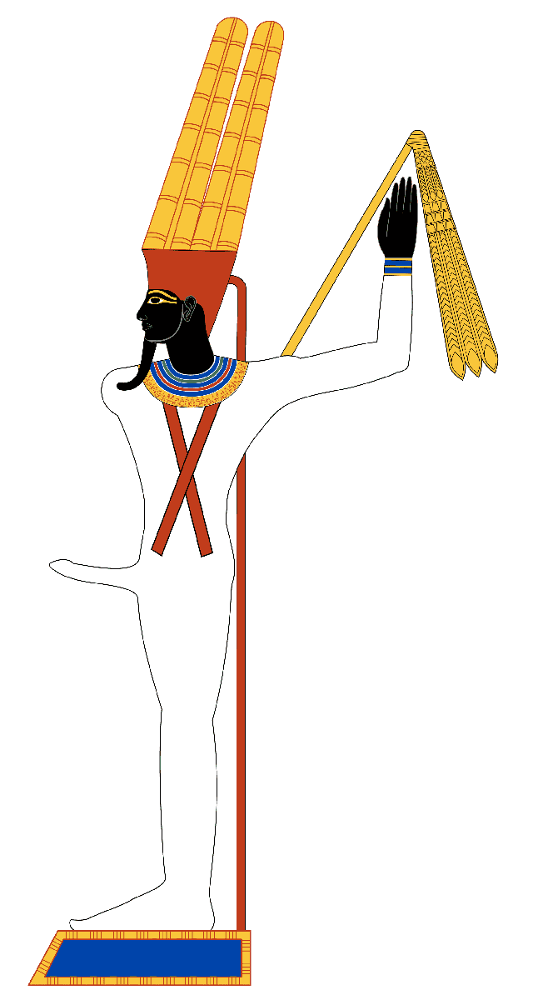
Dieu ayant forme humaine ou de momie, Min est représenté avec un phallus en érection et une couronne surmontée de deux plumes. Dans sa main droite, qui est levée, il tient un fléau. Il est le protecteur de la fertilité et des voyages dans le désert.
Vénéré principalement à Akhmim et à Coptos, portes du désert oriental et des routes commerciales vers la mer Rouge, Min était célébré chaque année lors d’une grande fête agricole marquant le début des moissons, à laquelle le pharaon participait en personne pour renouveler symboliquement sa fertilité royale. Il fut plus tard associé à Amon sous la forme d’Amon-Min-Kamoutef, « le taureau de sa mère », un dieu capable de se régénérer lui-même.
Mout
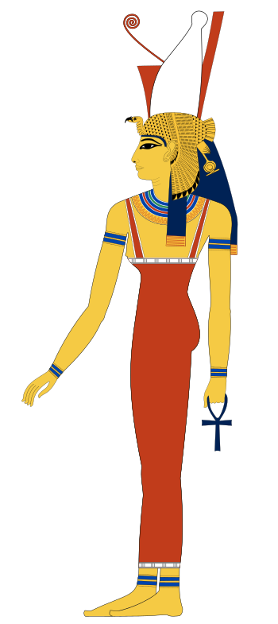
Épouse du dieu thébain Amon, on l’a d’abord représentée sous la forme d’un vautour, puis, plus tard, sous celle d’une femme. Cette déesse, son époux Amon et leur fils, Khonsou, constituent la triade thébaine, la famille sacrée de Thèbes.
Son sanctuaire principal, au sud du grand temple d’Amon à Karnak, était entouré d’un lac sacré en forme de croissant, l’Isherou. Mère adoptive symbolique de chaque pharaon, Mout pouvait elle aussi endosser un aspect vengeur proche de celui de Sekhmet, rappelant que les déesses protectrices égyptiennes portaient souvent en elles cette double nature, bienveillante et redoutable.
Nefertoum
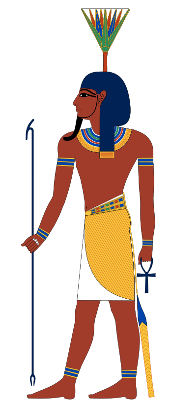
Nefertoum est le dieu de la fleur de lotus bleu et du parfum, souvent représenté comme un jeune homme portant sur la tête une fleur de lotus épanouie, parfois surmontée de deux hautes plumes. Selon la théologie memphite, il est le fils de Ptah et de Sekhmet, complétant ainsi la triade memphite ; son nom signifierait « celui qui est beau ».
À l’aube du monde, une fleur de lotus géante aurait émergé des eaux primordiales du Noun et, en s’ouvrant, aurait libéré le parfum de Nefertoum, associant intimement le dieu au souffle vital et à la naissance du soleil. Chaque matin, le pharaon inhalait symboliquement ce parfum lors des rituels, censé lui conférer jeunesse et régénération, avant que le dieu ne soit plus tard assimilé, sous une forme léonine, à un aspect guerrier proche de celui de sa mère Sekhmet.
Neith
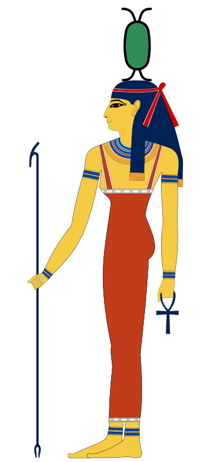
Déesse associée à la guerre et au tissage, elle est avec Isis, Nephthys et Selkis un des personnages importants du culte funéraire. Elle est habituellement figurée portant la couronne rouge de Basse-Égypte.
L’une des plus anciennes divinités du panthéon égyptien, Neith était vénérée dès l’époque prédynastique et devint la grande déesse de Saïs, capitale de la XXVIe dynastie. Certains textes en font même une déesse créatrice, née d’elle-même avant tous les autres dieux et mère de Rê. Dans le culte funéraire, elle protégeait plus particulièrement le vase canope contenant l’estomac du défunt.
Nekhbet
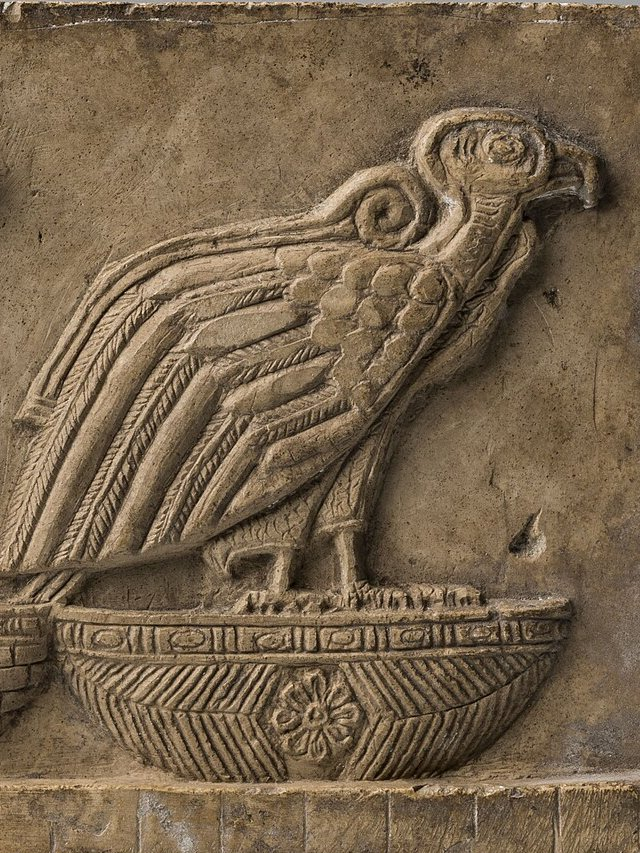
Représentée sous la forme d’un vautour, Nekhbet était la principale déesse de la Haute-Égypte, dont elle protégeait le roi. Son homologue septentrionale était Ouadjet, la déesse-cobra.
Son sanctuaire se trouvait à Nekheb, aujourd’hui El-Kab, en Haute-Égypte. Avec Ouadjet, elle formait les « Deux Maîtresses » (Nebty), dont les noms figuraient dans l’un des titres officiels de chaque pharaon pour symboliser l’union du Sud et du Nord. On la représentait souvent planant, ailes déployées, au-dessus de la tête du roi pour le protéger au combat.
Nephtys
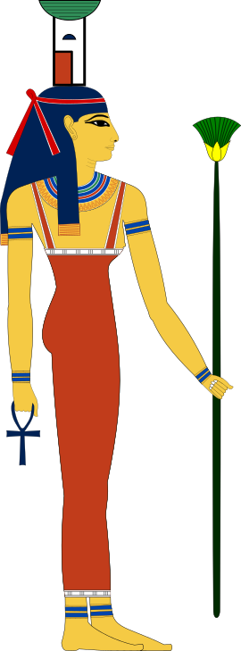
Nephtys est la fille de Nout, la sœur d’Isis et l’épouse de Seth, le dieu du désordre. C’est cependant à Osiris, de qui elle a eu un enfant, Anubis, que va sa loyauté. Lorsque Seth découvrit qui était le père de l’enfant, il assassina Osiris, et Nephtys se joignit à Isis dans sa recherche du corps d’Osiris. Tout comme sa sœur Isis, elle vient en aide aux morts et les protège. Elle est représentée comme une femme et porte sur la tête le hiéroglyphe de son nom.
Contrairement à sa sœur Isis, Nephtys ne posséda jamais de grand temple qui lui soit propre : son culte resta le plus souvent associé au sien, les deux déesses étant invoquées ensemble dans les rites funéraires. Son nom signifie « maîtresse du château » ou « maîtresse de la demeure », et elle est l’une des quatre déesses protectrices des vases canopes, veillant sur celui contenant les poumons du défunt. Elle incarne traditionnellement la lisière du désert, aride et stérile, en contraste avec les terres fertiles bordant le Nil qu’incarne Isis.
Osiris
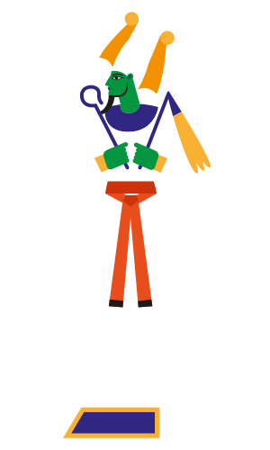
La première mention d’Osiris, l’un des principaux dieux égyptiens, apparaît dans des textes funéraires de l’ère des Pyramides, époque où débuta l’usage de la momification (2400 av. J.-C.). Il présidait les dieux qui déterminaient le sort des rois lorsqu’ils mouraient. Il a l’aspect d’un homme momifié portant une haute couronne blanche ornée de deux plumes d’autruche. Selon la mythologie égyptienne, Osiris fut assassiné par son frère Seth, puis ramené à la vie par l’amour de sa sœur-épouse, Isis. Ce mythe décrit les forces destructrices qui ont engendré le processus de la momification. L’amour d’Isis est le symbole de la régénération et de la promesse de la vie éternelle. Le cycle de la destruction, de la mort et de la renaissance se répétait chaque année lors de la crue annuelle du Nil, le fleuve qui fournissait les éléments indispensables à la vie et donna naissance à l’une des premières civilisations. Osiris est également assimilé au miracle du Nil et des riches récoltes qu’il permettait. Osiris, Isis et leur fils, Horus, constituaient une famille sacrée : dieu, déesse et enfant divin.
Ouadjet
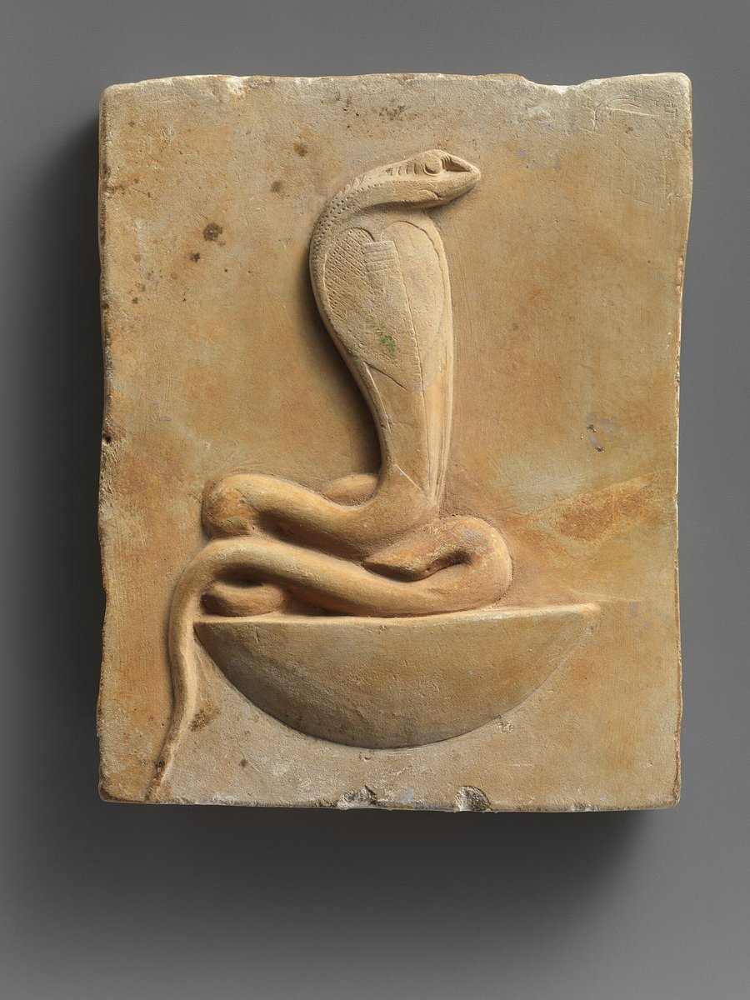
C’était la déesse-cobra dont la force meurtrière protégeait le roi de Basse-Égypte. Son homologue méridionale était Nekhbet, la déesse-vautour.
Son centre de culte, Bouto, se situait dans le delta du Nil. Sous sa forme de cobra dressé, l’uræus, elle ornait le front des pharaons et des dieux comme symbole de souveraineté et arme de protection ultime, prête à cracher le feu sur quiconque menaçait le roi. Elle était aussi associée à l’Œil de Rê, l’aspect vengeur et protecteur du dieu solaire.
Ptah
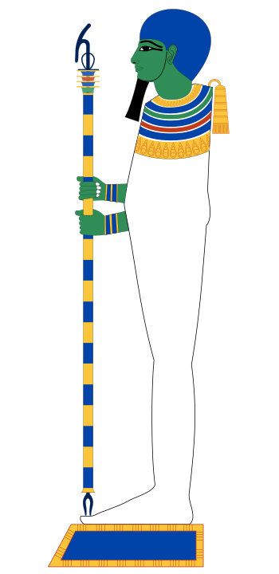
Dieu créateur de la ville de Memphis et époux de Sekhmet, Ptah est représenté comme un homme momifié tenant un ouas (un sceptre à la partie supérieure recourbée ayant la forme d’une tête d’animal, et à la base fourchue).
Selon la théologie memphite, gravée sur la célèbre Pierre de Shabaka, Ptah créa le monde par la seule puissance de sa pensée et de sa parole, un acte de création intellectuelle unique dans la mythologie égyptienne. Avec son épouse Sekhmet et leur fils Nefertoum, dieu du lotus, il formait la triade memphite ; il était en outre le patron des artisans, sculpteurs et bâtisseurs, qui le considéraient comme leur protecteur suprême.
Rê

Le dieu solaire était considéré comme le principe créateur central et originel. Le lever et le coucher quotidien du soleil apportaient la preuve tangible du pouvoir que possédait le soleil de tomber dans le ciel occidental et de renaître chaque matin dans le ciel oriental. C’est Rê qui donna aux Égyptiens le concept de Maât – le principe de la vérité (le droit) et de la justice équitable. Ce concept fondamental devint la pierre angulaire de la civilisation égyptienne. Le voyage cosmique du soleil, symbolisé par le scarabée (bousier qui pousse le disque solaire à travers le ciel), se poursuivrait aussi longtemps qu’on continuerait à vénérer le dieu solaire et Maât. Lorsqu’apparurent les autres dieux, la prééminence de Rê fut étendue à d’autres formes du dieu solaire – Chou, puis Geb et finalement Osiris. Sur la terre, les rois de l’Ancien Empire étaient considérés comme l’incarnation mortelle du dieu solaire. Autrement dit, le roi était un dieu sur la terre, et par ses actes, accomplis dans le respect de la justice, il empêchait le monde de tomber dans le chaos. Le dieu solaire est également connu sous le nom de Rê-Horakhty (« Horus de l’horizon ») et d’Atoum (le « Tout »), la substance d’où est tirée toute la création. Rê-Horakhty est un dieu au corps humain et à la tête de faucon portant une couronne en forme de disque solaire entouré d’un cobra, ou encore une couronne faite de cornes de bélier et ornée de plumes d’autruche. Atoum est représenté comme Roi d’Égypte et Seigneur de l’univers et porte la double couronne d’Égypte. Toutes ces formes du dieu solaire sont des symboles de la promesse de la résurrection, une réponse au problème de la mortalité humaine. Le culte du soleil a été perpétué par les rois égyptiens pendant des siècles. Ils construisirent des pyramides (symbolisant l’échelle qui monte jusqu’au soleil, ou encore les rayons obliques de celui-ci) et plus tard des temples dédiés aux dieux solaires. Lorsqu’un roi mourait, ses actes étaient jugés dans l’au-delà par Osiris, une des formes du dieu solaire qui gouvernait le monde inférieur. Si ses actes étaient considérés comme justes, le roi était transformé en une forme du dieu solaire.
Sekhmet

Sekhmet revêt l’apparence d’une femme à tête de lion surmontée d’un disque solaire et d’un uræus (cobra). Elle fut une importante déesse de la capitale thébaine pendant le Nouvel Empire (1550–1070 av. J.-C.). Son nom signifie « celle qui est puissante », et en tant que telle, elle incarne les aspects agressifs des déesses féminines.
Son culte était étroitement lié à celui de son époux Ptah à Memphis. « Œil de Rê » envoyé pour punir l’humanité rebelle, elle aurait, selon le mythe de la destruction des hommes, semé un tel carnage que Rê dut ruser en faisant répandre de la bière teintée de rouge qu’elle prit pour du sang : ivre, elle s’endormit et abandonna son massacre, révélant sa double nature de déesse guerrière et guérisseuse — les médecins égyptiens se réclamaient d’ailleurs « prêtres de Sekhmet ».
Selkis
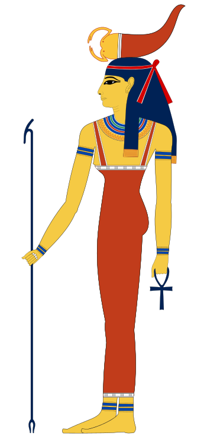
Selkis est habituellement représentée comme une femme avec un scorpion sur la tête. Son nom signifie « celle qui permet à la gorge de respirer ». Elle est la protectrice du canope à tête de faucon, et avec trois autres déesses, Isis, Nephthys et Neith, elle garde les sarcophages et les coffres canopes royaux.
Selkis n’avait pas de grand temple propre mais jouait un rôle funéraire de premier plan aux côtés d’Isis, Nephthys et Neith, chacune protégeant un des quatre vases canopes : elle veillait sur celui contenant les intestins du défunt. Son lien avec les scorpions faisait aussi d’elle une protectrice invoquée contre leurs piqûres, ses prêtres étant réputés capables de guérir les envenimations.
Seth

Seth est le rejeton de Geb et de Nout. En tant que dieu du désordre, il est responsable de l’assassinat de son frère, Osiris. Dans le concept égyptien dualiste du cosmos, Seth est apparié à Horus, le dieu qui gouvernait la terre, lui assurant ordre et stabilité. Seth est une divinité à tête d’animal arrondie, aux grandes oreilles aux extrémités carrées et à la queue dressée ressemblant à une flèche. On n’a pas identifié l’animal qu’il représente. Il est souvent figuré avec un corps humain et une tête allongée d’oiseau, ce qui le fait ressembler au dieu Thot.
Son principal centre de culte se trouvait à Ombos, dans le sud de l’Égypte, où il fut vénéré positivement pendant des siècles : plusieurs pharaons, comme Séthi Ier, portèrent fièrement son nom, et les Hyksôs l’assimilèrent à leur propre dieu des tempêtes. Ce n’est qu’à partir de la Basse Époque, après l’occupation étrangère répétée de l’Égypte, que Seth fut progressivement diabolisé et associé à l’ennemi extérieur. Malgré sa réputation de dieu du chaos, il joua paradoxalement un rôle protecteur essentiel : c’est lui qui, depuis la barque solaire de Rê, transperce chaque nuit le serpent Apophis pour permettre au soleil de poursuivre sa course.
Sobek
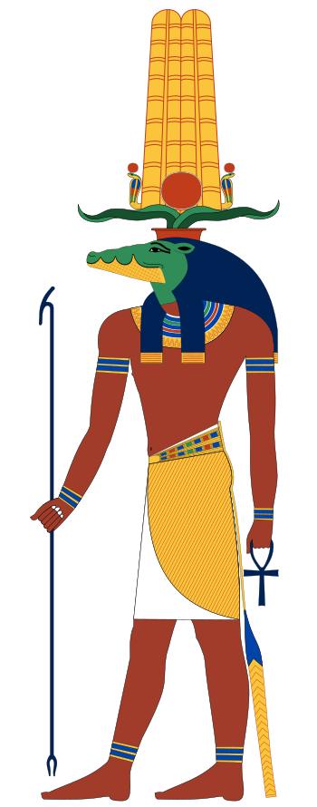
Le nom de ce dieu à tête de crocodile signifie « celui qui rend enceinte ou fertile ». À son lieu de culte de Kom Ombo, il partageait un temple avec Horus. Il fut plus tard intégré au culte d’Amon, étant adoré comme une manifestation du dieu solaire, Rê.
Ses deux grands centres de culte étaient Kom Ombo, où il partageait un temple avec Horus, et le Fayoum, région marécageuse surnommée « la terre de Sobek », où des crocodiles sacrés étaient élevés, parés de bijoux et momifiés à leur mort en son honneur. Le pharaon Amenemhat III, du Moyen Empire, lui voua un culte particulier dans le Fayoum, y multipliant les sanctuaires en son honneur, tant ce dieu incarnait à ses yeux la puissance royale et la maîtrise des eaux du Nil.
Sokar
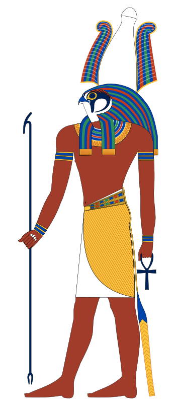
Sokar est le dieu faucon de la nécropole de Memphis, représenté comme un homme à tête de faucon coiffé de la couronne atef. Divinité funéraire ancienne, il présidait au bon déroulement des rites d’embaumement et protégeait les artisans travaillant les métaux précieux destinés aux tombeaux.
Son culte, célébré chaque année lors de la fête de Sokar à Memphis, comportait une procession où sa barque sacrée, la Henou, était tirée à travers la ville avant d’être hissée sur une butte de sable symbolisant la levée du soleil sur la nécropole. Avec le temps, Sokar fusionna avec Ptah et Osiris pour former la divinité composite Ptah-Sokar-Osiris, résumant à elle seule la création, la mort et la résurrection.
Thot
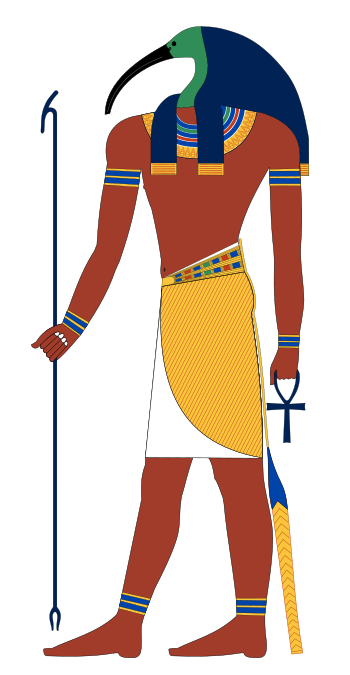
Thot est le messager du dieu solaire. Il est le dieu du savoir et de la sagesse, l’inventeur de l’écriture et de la science ainsi que le protecteur des scribes. On le représente sous l’aspect d’un être humain à tête d’ibis, d’un babouin, ou encore de la lune.
Son grand centre de culte, Hermopolis, en faisait le démiurge de la cosmogonie hermopolitaine. Inventeur de l’écriture hiéroglyphique et des mathématiques, il agissait comme scribe et arbitre des dieux : c’est lui qui consigna le verdict lors de la pesée du cœur, qui trancha en faveur d’Horus dans son conflit avec Seth, et qui, selon le mythe osirien, sauva le jeune Horus après la piqûre du scorpion.
Toueris
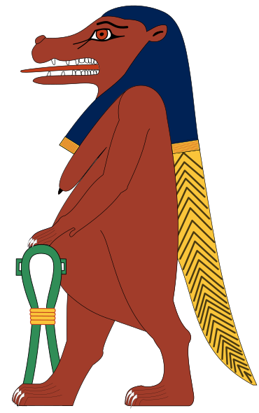
Déesse qui protégeait les femmes en couches, Touèris est représentée avec une tête d’hippopotame, les pattes d’un lion, et le dos et la queue d’un crocodile. Ses seins lourds et son ventre proéminent indiquent qu’elle est enceinte.
Comme Bès, avec qui elle partageait souvent la même fonction protectrice, Touèris n’eut jamais de grand temple d’État : elle était vénérée dans la sphère domestique, sous forme d’amulettes et de figurines placées dans les chambres d’accouchement pour éloigner les forces maléfiques menaçant la mère et l’enfant durant la naissance.
Wepwawet
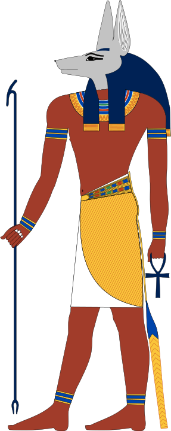
Wepwawet, « celui qui ouvre les chemins », est un dieu à tête de chacal ou de loup dont le centre de culte se trouvait à Assiout, en Haute-Égypte. À l’origine dieu guerrier, il ouvrait symboliquement la voie au pharaon lors des batailles et des processions royales, son étendard étant porté en tête des cortèges.
Wepwawet jouait également un rôle funéraire essentiel : c’est lui qui ouvrait le chemin du défunt vers l’au-delà, un rôle qui le rapprocha peu à peu d’Anubis, au point que les deux dieux à tête canine furent parfois confondus. Sa statue accompagnait aussi le pharaon lors de la cérémonie du couronnement, ouvrant la marche vers le trône.